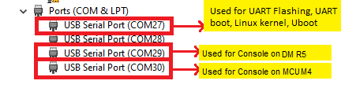
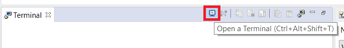
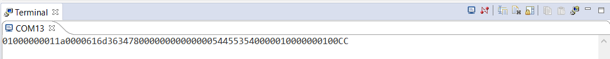
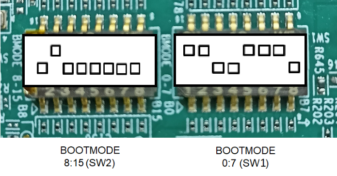
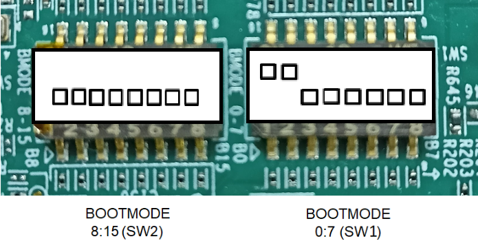
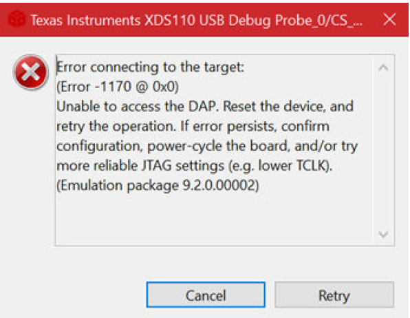

SK-AM62 / SK-AM62-LP
- Note
- Refer to EVM page for more details on the EVM, https://www.ti.com/tool/SK-AM62
Cable Connections
- The figure below shows some important cable connections, ports and switches.
- Take note of the location of the "BOOTMODE" switch, this is used to switch between different boot modes like OSPI, UART, SD, NOBOOT mode
Setup UART Terminal
- Many examples use a standard UART terminal to log the output from the examples. You can use any UART terminal program for the same. Below steps show how to setup the UART terminal from CCS.
- First identify the UART port as enumerated on the host machine.
- Make sure that the EVM and UART cable connected as shown in Cable Connections
- In windows, you can use the "Device Manager" to see the detected UART ports
- Search "Device Manager" in Windows Search Box in the Windows taskbar.
- If dont see any USB serial ports listed in "Device Manager" under "Ports (COM & LPT)", then make sure you have installed the UART to USB driver from FTDI, https://www.ftdichip.com/FTDrivers.htm.

Identify UART Port in Windows Device Manager
- In CCS, goto "View > Terminal"

Open New UART Terminal
- Select the UART port, keep other options to default, i.e 115200 baud rate - 8 data bits - No parity - 1 stop bit,
- We use the 1st USB serial port, as seen in the device manager, for below in the SDK
- Flashing application via UART
- Booting application via UART
- Uboot and Linux terminal
- We use the 3rd USB serial port, as seen in the device manager, as terminal output for examples which run from DM R5F (WKUP R5F)
- We use the 4th USB serial port, as seen in the device manager, as terminal output for examples which run from MCU M4F
- In this screenshot this happens to be COM27 and COM30. However on your machine this could be different. One tip to make sure there is no mistake in identifying the UART port is to disconnect all other UART to USB devices other than this EVM before checking in device manager.
Flash SOC Initialization Binary
- Attention
- This is a recommended one time step that needs to be done before you can load and run programs via CCS
-
If this step fails, maybe due to bad flash in EVM, then try one of the other SOC initialization steps mentioned at SOC Initialization
-
This step needs to be done once unless the OSPI flash has been erased or some other application has been flashed
- A quick recap of steps done so far that are needed for the flashing to work
- Make sure the UART port used for terminal is identified as mentioned in Setup UART Terminal
- Make sure python3 is installed as mentioned in Python3
- Make sure you have the EVM power cable and UART cable connected as shown in Cable Connections
- Build all the binaries from the mcu_plus_sdk installation path.
- For Linux
make -sj4 all
- For Windows
gmake -sj4 all
- POWER-OFF the EVM
- Set boot mode to UART BOOTMODE as shown in below image
- POWER-ON the EVM
- You should see character "C" getting printed on the UART terminal every 2-3 seconds as shown below

UART output in UART BOOT MODE
- Close the UART terminal as shown below. This is important, else the UART script in next step wont be able to connect to the UART port.
- Note
- For HS-SE device, use default_sbl_null_hs.cfg as the cfg file.
-
For HS-FS device, use default_sbl_null_hs_fs.cfg as the cfg file.
- Open a command prompt and run the below command to flash the SOC initialization binary to the EVM.
- For SK-AM62
cd ${SDK_INSTALL_PATH}/tools/boot
python uart_uniflash.py -p COM<x> --cfg=sbl_prebuilt/am62x-sk/default_sbl_null.cfg
- For SK-AM62-LP
cd ${SDK_INSTALL_PATH}/tools/boot
python uart_uniflash.py -p COM<x> --cfg=sbl_prebuilt/am62x-sk-lp/default_sbl_null.cfg
- Here COM<x> is the port name of the identified UART port in Windows.
- On Linux,
- The name for UART port is typically something like
/dev/ttyUSB0
- On some Linux systems, one needs to use
python3 to invoke python3.x, just python command may invoke python 2.x which will not work with the flashing script.
- When the flashing is in progress you will see something like below
- After all the flashing is done, you will see something like below
- If flashing has failed, see Flash tool error messages and solutions, and resolve the errors.
- If flashing is successful, do the next steps ...
- POWER-OFF the EVM
- Switch the EVM boot mode to OSPI NOR mode incase of AM62X-SK (or) OSPI NAND incase of AM62X-SK-LP as shown below,

OSPI NOR BOOT MODE (AM62X-SK)

OSPI NAND BOOT MODE (AM62X-SK-LP)
- Re-connect the UART terminal in CCS window as shown in Setup UART Terminal
- POWER-ON the EVM
- You should see output like below on the UART terminal
Starting NULL Bootloader ...
DMSC Firmware Version 8.6.4--v08.06.04 (Chill Capybar
DMSC Firmware revision 0x8
DMSC ABI revision 3.1
INFO: Bootloader_runCpu:155: CPU m4f0-0 is initialized to 400000000 Hz !!!
INFO: Bootloader_runCpu:155: CPU a530-0 is initialized to 1250000000 Hz !!!
INFO: Bootloader_runCpu:155: CPU a530-1 is initialized to 1250000000 Hz !!!
INFO: Bootloader_loadSelfCpu:208: CPU r5f0-0 is initialized to 400000000 Hz !!!
INFO: Bootloader_JumpSelfCpu:227: All done, jumping self ...
- Congratulations now the EVM is setup for loading and running from CCS !!!
- You dont need to do these steps again unless you have flashed some other binary to the flash.
- Now you can build a example of interest (see Build a Hello World example) and then run it (see CCS Launch, Load and Run)
- Attention
- If SBL NULL is used for development, GEL files aren't required for M4FSS0-0
Additional Details
- Note
- This section has more details on SK-AM62. This is mainly for reference and can be skipped unless referred to by other pages in this user guide.
SOC Initialization
Before any program can be loaded and run on the EVM, the SOC needs to be initialized. Below sections describes the various options available for SOC initialization.
SOC Initialization Using SPL
- Prepare a SD card with Linux image by following the Processor SDK Linux - Create SD card page.
- POWER-OFF the EVM
- Make sure below cables are connected as shown in Cable Connections
- Power cable
- JTAG cable
- UART cable
- Set EVM in SDCARD BOOT mode as shown below
- Insert the prepared SD card on the SD card slot.
- Setup UART terminals for Uboot/Linux and the M4 console as per Setup UART Terminal section.
- POWER-ON the EVM
- Uboot and Linux should come-up on the UART terminal.
- While Linux is booting, the remoteproc should start M4 as shown below.
[ 6.124861] k3-m4-rproc 5000000.m4fss: assigned reserved memory node m4f-dma-memory@9cb00000
[ 6.141637] k3-m4-rproc 5000000.m4fss: configured M4 for remoteproc mode
[ 6.154843] k3-m4-rproc 5000000.m4fss: local reset is deasserted for device
[ 6.170602] remoteproc remoteproc0: 5000000.m4fss is available
[ 6.196447] remoteproc remoteproc0: powering up 5000000.m4fss
[ 6.202553] remoteproc remoteproc0: Booting fw image am62-mcu-m4f0_0-fw, size 78960
[ 6.242673] remoteproc0#vdev0buffer: assigned reserved memory node m4f-dma-memory@9cb00000
[ 6.251498] remoteproc0#vdev0buffer: registered virtio0 (type 7)
[ 6.257790] remoteproc remoteproc0: remote processor 5000000.m4fss is now up
- Setting up the board for Linux boot requires to be done only once with the EVM. But after every power cycle of the board, we need to wait for the linux to come up before loading binaries to AM62x M4 through CCS.
BOOT MODE
UART BOOT MODE
This mode is used to flash files to the board flash via UART. It can also be used to boot applications via UART.
BOOTMODE [ 8 : 15 ] (SW2) = 0000 0000
BOOTMODE [ 0 : 7 ] (SW1) = 1101 1100
OSPI NOR BOOT MODE
This mode is used to boot flashed applications via EVM flash like OSPI NOR flash
BOOTMODE [ 8 : 15 ] (SW2) = 0100 0000
BOOTMODE [ 0 : 7 ] (SW1) = 1100 1110
OSPI SERIAL NAND BOOT MODE
This mode is used to boot flashed applications via EVM flash like OSPI Serial NAND flash
BOOTMODE [ 8 : 15 ] (SW2) = 0000 0000
BOOTMODE [ 0 : 7 ] (SW1) = 1100 0000
SD BOOT MODE
This mode is used to boot applications via SD card on the EVM.
BOOTMODE [ 8 : 15 ] (SW2) = 0100 0000
BOOTMODE [ 0 : 7 ] (SW1) = 1100 0010
NOBOOT MODE
BOOTMODE [ 8 : 15 ] (SW2) = 0000 0000
BOOTMODE [ 0 : 7 ] (SW1) = 1101 1111
EMMC BOOT MODE
This mode is used to boot applications via eMMC on the EVM.
BOOTMODE [ 8 : 15 ] (SW2) = 0000 0000
BOOTMODE [ 0 : 7 ] (SW1) = 1101 0011
Troubleshooting EVM issues
- JTAG connection fails on some EVMs with the following error. Need to connect the JTAG cable after board is powered on.

JTAG Connection Error Dialog


 1.8.20
1.8.20